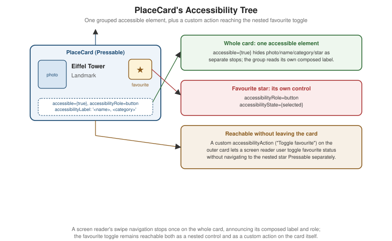

Accessibility
|
This content was generated with the assistance of AI and should be verified against the official documentation before being relied on in production. |
Modals, Alerts, and Progress covered the visual side of surfacing state to the user — a toast, a dialog, a progress bar. This page covers the other half: making Places's UI usable with assistive technology, chiefly VoiceOver on iOS and TalkBack on Android, so that a screen reader user can navigate the same place list, place card, and forms as everyone else.
Accessibility Props: Grouping and Focus Order
-
accessible(boolean) marks a whole subtree as a single accessible element, hiding its individual children from the accessibility tree. This is the key grouping primitive: without it, a screen reader swiping acrossPlaceCardstops three separate times — once on the photo, once on the name/category text, once on the favourite star — instead of once on the card as a whole. -
accessibilityLabelis the string a screen reader announces instead of trying to derive one from visible text. This is essential for icon-only controls — the favourite star toggle’s visible content,★/☆, is not meaningful read aloud, so it needs an explicit label a sighted reading of the glyph doesn’t provide. -
accessibilityRolesays what kind of control this is —'button','link','image','header','switch','text', and more — which lets a screen reader announce "button" (or "link", or "header") and enables the platform gestures and expectations that go with that role. -
accessibilityState—{ disabled, selected, checked, busy, expanded }— is the current state a screen reader should announce alongside the role, e.g.{ selected: place.favourite }on the favourite toggle so VoiceOver says "star, button, selected". -
accessibilityValue—{ min, max, now, text }— is for a control with a continuous or textual value, such as the progress bar from Modals, Alerts, and Progress or a slider. -
accessibilityHintis an optional, longer supplementary string describing the result of interacting with the control — for example "Removes this place from favourites" — read after the label, role, and state. Use it only when it adds information the label doesn’t already convey: over-usingaccessibilityHintmakes VoiceOver verbose and annoying to listen to. -
accessibilityActions/onAccessibilityActiondeclare custom actions a screen reader user can invoke beyond the default activation. An action descriptor is a plain{ name, label }object;onAccessibilityActionreceives an event whosenativeEvent.actionNameidentifies which action fired, typically dispatched from aswitch. This is what lets a "Toggle favourite" action live directly onPlaceCarditself, so a screen reader user doesn’t have to navigate to the nested starPressableseparately — shown in full below. -
accessibilityLiveRegion(Android) and its cross-platform aliasaria-live—'none' | 'polite' | 'assertive'— announce a live-updating region’s content changes automatically, e.g. a sync-status text updating in place, without the user needing to navigate back to it. -
importantForAccessibility—'auto' | 'yes' | 'no' | 'no-hide-descendants'— removes a purely decorative element, such as a background patternView, from the accessibility tree entirely. -
aria-aliases. React Native also acceptsaria-label,aria-hidden,aria-selected,aria-disabled,aria-busy,aria-checked,aria-valuemin/aria-valuemax/aria-valuenow/aria-valuetext,aria-live, androleas web-familiar aliases for theaccessibilityprops above. The two forms are interchangeable — React Native normalizes both to the same underlying platform semantics — so a team with React web experience may reach for thearia-*spelling instead, with no behavioral difference.
Grouping and Focus Order
accessible={true} groups a subtree into one stop, as above; the order elements are focused in by a screen
reader’s swipe navigation normally follows visual/DOM order. When a custom layout needs a specific reading order — absolutely-positioned overlays, for instance, that need to be reachable in a sensible sequence rather than the
order they happen to be drawn in — the levers available are accessibilityViewIsModal (iOS, scoping focus to a
modal subtree) and deliberately ordering elements in JSX so the default swipe order already matches the intended
one.
AccessibilityInfo, Large Text, Contrast, and Testing
AccessibilityInfo
-
AccessibilityInfo.isScreenReaderEnabled()returns aPromise<boolean>, and the'screenReaderChanged'event (subscribed to withAccessibilityInfo.addEventListener) fires when that changes — together they let Places detect whether VoiceOver/TalkBack is running and branch behavior accordingly, e.g. skipping a purely decorative auto-playing animation. -
AccessibilityInfo.isReduceMotionEnabled()and the'reduceMotionChanged'event detect the OS-level "reduce motion" accessibility setting; Animations covers actually disabling or simplifying an animation — `PlaceCard’s fade-in, for example — once this setting is on. -
AccessibilityInfo.announceForAccessibility(message)makes a screen reader announce an arbitrary string immediately, for state changes that don’t correspond to a focused element — "Place saved" after a successful add, for instance, complementing the toast from Modals, Alerts, and Progress with something a screen reader user can actually perceive, since a purely visual toast is otherwise easy to miss entirely.
Large Text
allowFontScaling defaults to true on Text, respecting the device’s OS-level text-size setting.
maxFontSizeMultiplier caps how far a layout is willing to scale before truncation or wrapping breaks, which is
useful on a tightly-constrained label — a badge, say — without disabling scaling altogether. The general rule:
prefer flexible layouts (flexWrap, minHeight instead of a fixed height) that tolerate a much taller Text
under a large accessibility font size setting, over numberOfLines truncation, wherever the truncated content
genuinely matters to the user.
Colour Contrast and Dark Mode
styling.adoc’s `useColorScheme()/ThemeProvider dark-mode palette is also an accessibility concern: Places's
own lightColors and darkColors token pairs should each independently meet at least WCAG AA contrast (4.5:1
for normal text) between text/textMuted and their background/surface counterparts. See
Web Accessibility for the WCAG standard itself, its conformance levels, and
contrast-checking tools — this page does not re-derive WCAG from scratch.
Testing
-
VoiceOver — iOS Settings > Accessibility > VoiceOver, or the Simulator’s Accessibility Inspector — and TalkBack — Android Settings > Accessibility > TalkBack — enabled manually on Places screens are the ground truth: no automated check replaces actually swiping through a screen with a screen reader on.
-
Xcode’s Accessibility Inspector (
Xcode > Open Developer Tool > Accessibility Inspector) audits a running iOS build’s accessibility tree directly and includes a built-in audit that flags missing labels and low contrast. -
Android Studio’s Layout Inspector and the standalone Accessibility Scanner app are the Android-side equivalents, surfacing the accessibility tree and flagging common issues on a running build.
Places: An Accessible PlaceCard
(a) Grouping the Card into One Accessible Element
accessible={true} on the outer Pressable groups the photo, name, category, and star into a single swipe
stop, with a composed accessibilityLabel standing in for all of it:
// src/features/places/components/PlaceCard.tsx (excerpt -- accessible grouping added to the outer Pressable)
<Pressable
style={({ pressed }) => [styles.card, pressed && styles.cardPressed]}
onPress={() => onPress(place.id)}
accessible={true}
accessibilityRole="button"
accessibilityLabel={`${place.name}, ${place.category}${place.favourite ? ', favourite' : ''}`}
>
{/* photo, name, category, favourite toggle unchanged -- no longer individually announced */}
</Pressable>(b) The Favourite Toggle as an Independent Control, Plus a Custom Action on the Card
The nested star Pressable gets its own role, label, and state, since accessible={true} on the card above
would otherwise swallow it into the card’s single announcement. accessibilityActions/onAccessibilityAction on
the outer card additionally exposes the same toggle as a custom action, so a screen reader user can trigger it
without navigating to the nested star at all:
// src/features/places/components/PlaceCard.tsx (excerpt -- full component with accessible favourite toggle and a custom action)
export function PlaceCard({ place, onPress, onToggleFavourite }: PlaceCardProps) {
const theme = useTheme();
const styles = useMemo(() => createStyles(theme), [theme]);
return (
<Pressable
style={({ pressed }) => [styles.card, pressed && styles.cardPressed]}
onPress={() => onPress(place.id)}
accessible={true}
accessibilityRole="button"
accessibilityLabel={`${place.name}, ${place.category}${place.favourite ? ', favourite' : ''}`}
accessibilityActions={[{ name: 'toggleFavourite', label: 'Toggle favourite' }]}
onAccessibilityAction={(event) => {
switch (event.nativeEvent.actionName) {
case 'toggleFavourite':
onToggleFavourite(place.id);
break;
}
}}
>
{place.photoUri !== null && (
<Image source={{ uri: place.photoUri }} style={styles.photo} resizeMode="cover" />
)}
<View style={styles.body}>
<Text style={styles.name}>{place.name}</Text>
<Text style={styles.category}>{place.category}</Text>
</View>
<Pressable
onPress={() => onToggleFavourite(place.id)}
hitSlop={8}
accessibilityRole="button"
accessibilityLabel="Toggle favourite"
accessibilityState={{ selected: place.favourite }}
>
<Text style={[styles.favourite, place.favourite && styles.favouriteActive]}>
{place.favourite ? '★' : '☆'}
</Text>
</Pressable>
</Pressable>
);
}
Because the outer Pressable’s own `onPress still fires onPress(place.id) as before, accessible={true} and
the added props change only how the card is announced and what actions are available to a screen reader user — nothing about the card’s visual behavior or its existing onPress/onToggleFavourite contract changes for a
sighted, touch-driven user.